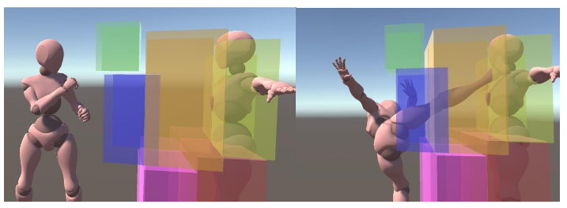

BachelorThesis
Procdural Animation System for Meele Combat Systems. Developed @Hochschule Kempten
Project Overview
- Engine: Unity
- Programming Language: C#
- Team Size: 1
- Status: finished
- Grade: 1.3
Descritpion
In my bachelor’s thesis, I developed an adaptive animation system that selects the appropriate animations based on the situation and adjusts them at runtime. Fixed animations are used, which are then modified at runtime using inverse kinematics. Colliders are used for animation selection to detect whether the target object is within them. Through an editor extension, this system can be quickly and flexibly integrated into various projects.
